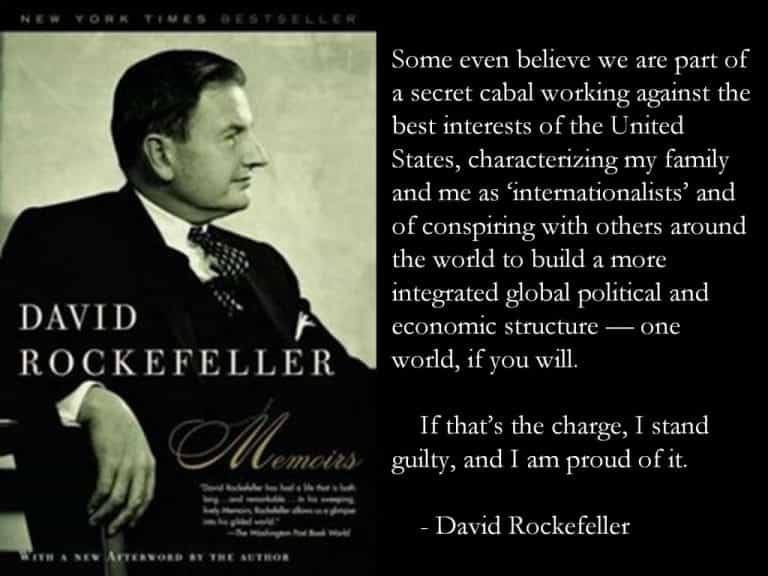
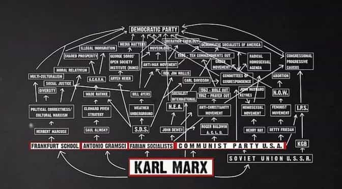

Daryush "Roosh" Valizadeh created ROK in October 2012. You can visit his blog at RooshV.com or follow him on Twitter and Facebook.


None Dare Call It Conspiracy details the overreaching “conspiracy” of elites pushing socialism and Cultural Marxism onto the masses while accumulating even greater centralized control over nations and their citizens. Feminists and social justice warriors are nothing more than the financed low-level soldiers in a vice to destroy the family unit and control human behavior while top-down pressure is being applied by forces who are above the law.
“There are no accidents in politics.” —Joseph P. Kennedy
History had a long line of power-hungry rulers and despots. We still have them, but they wear suits and ties and speak of “equality” and “human rights,” mere covers for them to increase their power by using various -isms to centralize governments that can then be commandeered by the puppets they insert.
Socialism is their favorite tool to increase government power because a socialist state requires massive centralization. When something is centralized and top heavy, it’s easy to control if you can put your man at its head.
What exactly is socialism? It’s 1% or less of individuals at the top controlling the wealth and distributing rations to the bottom 99%. It is nothing more than an operating system for a small group to take control over a nation’s resources while the sheep follow along, thinking they will have a better standard of living because of it.
The idea that socialism is a share-the-wealth program is strictly a confidence game to get the people to surrender their freedom to an all-powerful collectivist government. While the Insiders tell us we are building a paradise on earth, we are actually constructing a jail for ourselves.
[…]
…the policies of the government today, whether Republican or Democratic, are closer to the 1932 platform of the Communist Party than they are to either of their own party platforms in that critical year.
[…]
Every proposal by our political leaders… carries us further leftward to centralized government. This is not because socialism is inevitable. Is is no more inevitable than Pharaohism. Is it largely the result of clever planning and patient gradualism.
[…]
Doesn’t it strike you as strange that some of the individuals pushing hardest for socialism have their own personal wealth protected in family trusts and tax-free foundations? …if one understands that socialism is not a share-the-wealth program, but is in reality a method to consolidate and control the wealth, then the seeming paradox of super-rich men promoting socialism becomes no paradox at all.
What a brilliant scam for the filthy rich to push feminism, equality, and all that nonsense on us when they are rigging the game to protect their wealth and pay less taxes than the middle class. If you keep moving up the institutional ladder into the central banks, you’ll encounter men who control it all.

When banks loan to retail clients such as yourself, they usually get collateral through property or other assets. When bigger banks loan to governments, they get collateral in the form of gaining influence in policy decision making (e.g. having their officers being placed in influential government positions). If a government disobeys, they can simply finance that government’s enemy.
Your government is therefore controlled by those they get money from, so to understand who is truly ruling over you, you only have to identify those who run the biggest banks of your nation. They have more power than your elected rulers.
The book states that banking panics are caused by bankers with the intent to put certain competitors out of business while creating a “crisis” that allows for “reforms” that give them even more wealth and power. The globalists at the top run up debts, collect interest payments, rig the markets, steal wealth from the sheep, and then force us into wars as perverse “profit maximizers.” All major wars of the last 100 years were essentially get-rich-quick schemes of the globalists, which explains America’s perpetual wars in the Middle East. These men are parasites who view the rest of humanity as a mere device for them to rule and dominate.
The graduated income tax and a central bank are two of the ten planks of The Communism Manifesto.
[…]
The establishing of the Federal Reserve System provided the “conspiracy” with an instrument whereby the international bankers could run the national debt up to the sky, thereby collecting enormous amounts of interest and also gaining control over the borrower.
[…]
Since the keystone of the international banking empires has been government bonds, it has been in the interest of these international bankers to encourage government debt. The higher the debt the more the interest. Nothing drives government deeply into debt like a war; and it has not been an uncommon practice among international bankers to finance both sides of the bloodiest military conflicts. For example, during our Civil War the North was financed by the Rothschilds through their American agent, August Belmont, and the American South through the Erlangers, Rothschild relatives.
When it comes to politics and punditry, what’s important is finding out who funds the politician or the think tank commentator, because if you know the source of funding, you know the agenda and which strings are being pulled.
Radical movements are never successful unless they attract big money and/or outside support. The great historian of the 20th century, Oswald Spengler, was one of those who saw what American Liberals refuse to see—that the Left is controlled by its alleged enemy, the malefactors of great wealth.
[…]
…[the] Leftist ideology and platform were made to order for the elitist Insiders because it aimed at concentrating power in government.

Those who had a hand in creating the Federal Reserve—a privately owned bank—through meetings on Jekyll Island also played a part in financing the Bolshevik Revolution in Russia. This is why so many forces in America were sympathetic to Communist Russia and even Stalin, and why the end result of World War 2 was less about defeating fascism but handing countries over to centralized communist control (just as many countries that were “liberated” from Hitler went over to Stalin). They hoped the result of WW2 could usher in a world government controlled by a socialist republic in the prototype of Russia, all created, financed, and controlled by globalist interests.
To add money to the pot, Russia was made to be the big bad “enemy” to justify billions in defense spending in the US that also went into globalist coffers. They control so many angles of the game that it’s hard for them to lose. Every time you use one of their bank notes, backed by nothing, you aid in justifying their power.
Does it make sense to spend $75 billion a year on national defense and then deliberately increase the war-making potential of an avowed enemy? It does to Mr. Rockefeller and the Insiders.
[…]
One of the primary reasons the Insiders worked behind the scenes to foment WW1 was to create in its aftermath a world government. If you wish to establish national monopolies, you must control national governments. If you wish to establish international monopolies and cartels, you must control a world government.
[…]
…the cartel capitalist uses the government to force the public to do business with him. [Sound like Obamacare?]
The conspiracy includes being able to control who is elected as US President “in order that no candidate might be nominated whose views were not in accord with theirs.” All information and ideas you consume from the establishment is controlled, along with the candidates you vote for.
Although there are philosophical differences between the grass roots Democrats and the grass roots Republicans, yet as you move up the party ladders these differences become less and less distinguishable until finally the ladders disappear behind the Establishment’s managed news curtain and come together at the apex under the control of the Council Of Foreign Relations.
[…]
The landscape painters focus your attention on the kids in the street while the real danger is from above.
One particular passage caught my eye because it seemed relevant to the European migrant crises that started in 2015 (the book was written in 1971):
…elite planners conduct exercises in what they call “the world game.” For example: There are too many people in Country A and not enough people in Country B. How do you move people from Country A to Country B? We need so many males, so many females, so many of this occupation and so many of that occupation. How do you get these people from Country A and settle them in Country B in the shortest possible time?
Obama’s campaign marketing for presidency was nothing more than the spamming an old socialist idea:
[Socialist and liberal] groups chant that if we don’t “change” America, we will lose it. “Change” is a word we hear over and over. By “changes” these groups mean Socialism. Virtually all members of these groups sincerely believe that they are fighting the Establishment. In reality they are an indispensable ally of the Establishment in fastening Socialism on all of us.
The book closes out by urging the reader to spread anti-socialist ideas further, similar to what I advise in the Global Information Warfare section of The Resistance Pyramid, since a bank robber isn’t going to rob a bank if he knows the police is already there waiting for him.
I wish I read this book before I started getting into battles with feminists and their enablers, the most intense of which I described in my book Free Speech Isn’t Free. For over ten years, I thought that feminism was more-or-less a grassroots movement propelled by uppity women to assert their superiority over men, and while that may be subjectively true for the useless idiot feminist who thinks she is fighting the patriarchy, she’s actually part of a top-down socialist movement that attempts to collectivize and centralize nations to allow for seamless control over global wealth, resources, and power that hapless citizens go along with in the name of “progress” and “equality.”
It’s great to know what the elite’s agenda is, but considering the powerful forces it stems from, the book doesn’t give me much hope in putting a stop to it. Nonetheless, I highly recommend this book because it clearly explains the acts of subversion that is grinding us down, and who knows, maybe knowledge is power, and from that we can gain the wisdom and tools to defeat our masters.
Read More: “None Dare Call It Conspiracy” on Amazon